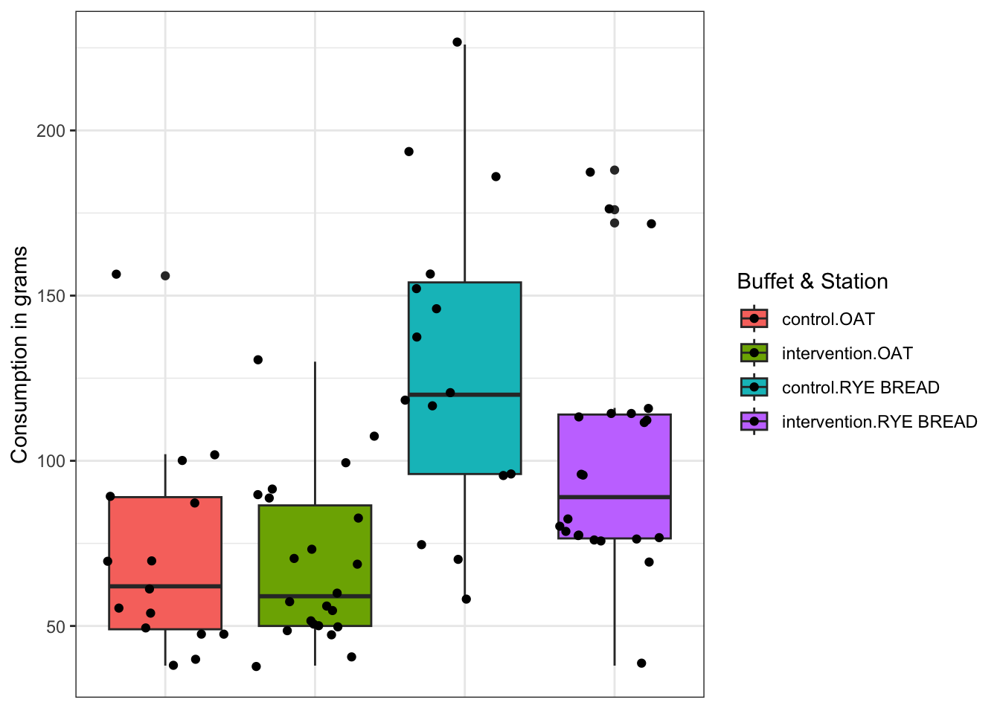
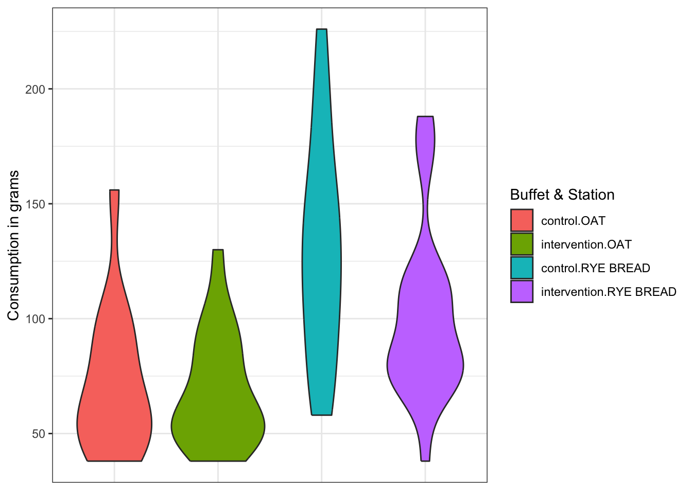
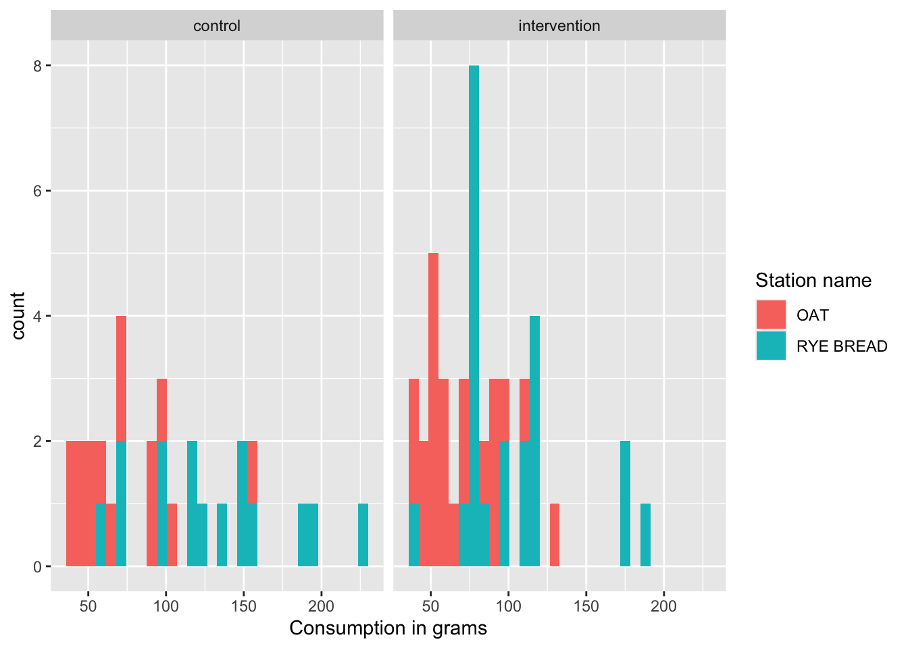

Chapter 9 MST exercises
Below you will find exercises relevant for the data analysis for the project work in the Meal Systems and Technologies. Exercises are meant as a guide on what you can do with data obtained with the iBuffet.
9.1 Exercise 1 - cleaning Compusense data with R
The task of this exercise is to get your data ready for data-analysis i.e. cleaning and merging your data! This can be done in R or excel.
That includes:
- Give meaningful labels to variables.
- Merging of “control” and “intervention” spreadsheet.
- Removal of meaningless rows such as rows without data etc.
- Removal of unimportant characters.
- Merging of consumption data with questionnaire. (Remember to have matching columns if using R - see chapter 2.3.1.1).
9.1.1 Exercise 1 - Solution
Start by importing the data and combine them row wise with the rbind() function. These datasets look exactly like the ones that you will receive from Compusense, but for the sake of simplicity, they have been included in the data4consumerscience-package.
library(data4consumerscience)
data("mstcontrol")
data("mstintervension")
data("mstquestionare")
consumption <- rbind(mstcontrol,mstintervension)Next we clean our data. We want to remove rows containing “–” , “0” and “REFILL”. We use the filter function from the tidyverse package. The “!” is used as a NOT logical operator, meaning it will only select rows that do NOT contain “--”. if_any checks all rows in specific columns, to see if conditions are met. everything specifies that it should be all columns.
library(tidyverse)
consumption <- consumption %>%
filter(!if_any(everything(), ~ .x == "--")) %>%
filter(!if_any(everything(), ~ .x == "0")) %>%
filter(!if_any(everything(), ~ grepl("REFILL", .x)))If we take a look at the Person column, then it is rather confusing. We want to have the Person ID only. Which can be found after “A:”. This can be done by using gsub with string specifications.
consumption$Person <- gsub("^A:\\s*(\\d+).*", "\\1", consumption$Person) # Only extract the "Number" after "A:". Then we merge the questionnaire and consumption data using left_join by a common variable “Person”
mstquestionare$Person <- as.factor(mstquestionare$Person)
consumption$Person <- as.factor(consumption$Person)
Buffet_quest <- consumption %>%
left_join(mstquestionare, by = c("Person"))
Buffet_quest <- na.omit(Buffet_quest) #remove rows with NA valuesWe are however not interested in all variables. Therefore, we select only the relevant variables! In this case only variables in columns 1-7 and 18-29.
The scale of the questionnaire are given on likert scale e.g. 1-5, 1-7 or 1-9. Or male and female are encoded as 1 or 2, if we however want the corresponding text answer. e.g. 1 = “Female” or 2 = “Male”. This can be done with the mutate and fct_recode. Below will only show examples of how this could be done, for some selected variables. The opposite of what is shown, can also be used going from text to numbers! While we are at it, we are also going to rename inside the “Buffet name” variable.
library(forcats)
Buffet_quest <- Buffet_quest %>%
mutate(
Gender = fct_recode(as.factor(Gender),
"Female" = "1",
"Male" = "2"),
Dietary_lifestyle = fct_recode(as.factor(Dietary_lifestyle),
"Omnivore" = "1",
"Flexitarian" = "2",
"Pescetarian" = "3",
"Vegetarian" = "4",
"Vegan" = "5"),
`Oat/Oatmeal_familiarity` = fct_recode(as.factor(`Oat/Oatmeal_familiarity`),
"I do not recognize it" = "1",
"I recognize it, but i have not tasted it" = "2",
"I have tasted it, but i do not consume it on a regular basis" = "3",
"I consume it on a regular basis" = "4"),
Freq_oat_consumption = fct_recode(as.factor(Freq_oat_consumption),
"Never" = "1",
"Less than once a month" = "2",
"1-3 times a month" = "3",
"1-3 times a week" = "4",
"4-6 times a week" = "5",
"Once a day" = "6",
"2 or more times a day" = "7"),
Freq_ryebread_consumption = fct_recode(as.factor(Freq_ryebread_consumption),
"Never" = "1",
"Less than once a month" = "2",
"1-3 times a month" = "3",
"1-3 times a week" = "4",
"4-6 times a week" = "5",
"Once a day" = "6",
"2 or more times a day" = "7"),
`Buffet name` = recode(`Buffet name`,
"OAT TEST Kontrol" = "control",
"OAT TEST Interventions" = "intervention")
)See how it looks below!
9.2 Exercise 2 - creating a tableone and visualization
Descriptive Statistics are used to present quantitative descriptions in a manageable form e.g. simpler summary (e.g. a number, average etc.). Although you run the risk of distorting the original data or losing important details descriptive statistics provide a powerful summary that may enable comparisons across people or other units.
You should use tableone as a way to present your descriptive statistics! See chapter 10.4 for how to do it!
9.2.1 Exercise 2 - solution
Lets have a quick overview of the data by the use of CreateTableOne. Note: If you want to showcase e.g. “Age” with median and IQR, you need to add the variable to the nonnormal argument in the print function.
library(tableone)
#it seems the variable "Consumption in grams" was a character. We want it to be numeric in our tableone!
Buffet_quest$`Consumption in grams` = as.numeric(Buffet_quest$`Consumption in grams`)
tb1 <- CreateTableOne(data = Buffet_quest, vars = c("Gender", "Age", "Nationality",
"Dietary_lifestyle", "Oat/Oatmeal_familiarity", "Freq_oat_consumption",
"Freq_ryebread_consumption","I_like_oat_/_oatmeal", "I_like_ryebread","Consumption in grams"),strata = "Buffet name")
print(tb1, showAllLevels = TRUE, nonnormal = 'Age')## Stratified by Buffet name
## level
## n
## Gender (%) Female
## Male
## Age (median [IQR])
## Nationality (%) American
## British
## Canadian
## Chinese
## Congolese
## Croatian
## Danish
## Dansk
## German
## Hungarian
## Irish
## Nepalese
## Nepali
## Polish
## Taiwanese
## Dietary_lifestyle (%) Omnivore
## Flexitarian
## Pescetarian
## Vegetarian
## Vegan
## Oat/Oatmeal_familiarity (%) I have tasted it, but i do not consume it on a regular basis
## I consume it on a regular basis
## Freq_oat_consumption (%) Less than once a month
## 1-3 times a month
## 1-3 times a week
## 4-6 times a week
## Once a day
## 2 or more times a day
## Freq_ryebread_consumption (%) Never
## Less than once a month
## 1-3 times a month
## 1-3 times a week
## 4-6 times a week
## Once a day
## I_like_oat_/_oatmeal (mean (SD))
## I_like_ryebread (mean (SD))
## Consumption in grams (mean (SD))
## Stratified by Buffet name
## control intervention p test
## n 30 44
## Gender (%) 22 (73.3) 38 (86.4) 0.270
## 8 (26.7) 6 (13.6)
## Age (median [IQR]) 26.00 [25.00, 27.75] 28.00 [26.00, 30.00] 0.022 nonnorm
## Nationality (%) 0 ( 0.0) 2 ( 4.5) 0.007
## 6 (20.0) 0 ( 0.0)
## 2 ( 6.7) 0 ( 0.0)
## 0 ( 0.0) 2 ( 4.5)
## 0 ( 0.0) 2 ( 4.5)
## 2 ( 6.7) 0 ( 0.0)
## 14 (46.7) 20 (45.5)
## 2 ( 6.7) 2 ( 4.5)
## 2 ( 6.7) 4 ( 9.1)
## 0 ( 0.0) 2 ( 4.5)
## 0 ( 0.0) 2 ( 4.5)
## 0 ( 0.0) 2 ( 4.5)
## 0 ( 0.0) 4 ( 9.1)
## 0 ( 0.0) 2 ( 4.5)
## 2 ( 6.7) 0 ( 0.0)
## Dietary_lifestyle (%) 2 ( 6.7) 12 (27.3) 0.182
## 18 (60.0) 24 (54.5)
## 4 (13.3) 2 ( 4.5)
## 4 (13.3) 4 ( 9.1)
## 2 ( 6.7) 2 ( 4.5)
## Oat/Oatmeal_familiarity (%) 6 (20.0) 14 (31.8) 0.391
## 24 (80.0) 30 (68.2)
## Freq_oat_consumption (%) 0 ( 0.0) 4 ( 9.1) 0.050
## 4 (13.3) 10 (22.7)
## 4 (13.3) 12 (27.3)
## 10 (33.3) 12 (27.3)
## 10 (33.3) 4 ( 9.1)
## 2 ( 6.7) 2 ( 4.5)
## Freq_ryebread_consumption (%) 4 (13.3) 2 ( 4.5) 0.186
## 2 ( 6.7) 4 ( 9.1)
## 10 (33.3) 10 (22.7)
## 6 (20.0) 16 (36.4)
## 6 (20.0) 4 ( 9.1)
## 2 ( 6.7) 8 (18.2)
## I_like_oat_/_oatmeal (mean (SD)) 7.33 (1.42) 7.18 (1.08) 0.605
## I_like_ryebread (mean (SD)) 7.13 (1.48) 6.82 (1.90) 0.447
## Consumption in grams (mean (SD)) 100.60 (49.79) 84.64 (35.10) 0.110From these results, we can quickly gather information such as:
Be careful with the interpretation as each participant occurs two times each.
The number of samples is 76 (n = 76). Where the intervention group has 44 samples (n = 44), and the control group has 32 samples (n = 32)
The vast majority Like oat/oatmeal moderately or even more! No significant difference in oat liking across control and intervention (p = 0.285)
The average consumption of oat and rye was 100 grams in the control, where the average consumption of oat and ryebread was 85 grams. And significantly different (see t-test chapter 6.4)
It could be interesting to see if there is a difference in the control and intervention. This can be done with the use of the strata argument. - Beware that the function uses ANOVA (chapter 6.6) when comparing more than two groups.
tb2 <- CreateTableOne(data = Buffet_quest, vars = c("Gender", "Age", "Nationality",
"Dietary_lifestyle", "Oat/Oatmeal_familiarity", "Freq_oat_consumption",
"Freq_ryebread_consumption","I_like_oat_/_oatmeal", "I_like_ryebread","Consumption in grams"),strata = c("Station name", "Buffet name"))
print(tb2, showAllLevels = TRUE)## Stratified by Station name:Buffet name
## level
## n
## Gender (%) Female
## Male
## Age (mean (SD))
## Nationality (%) American
## British
## Canadian
## Chinese
## Congolese
## Croatian
## Danish
## Dansk
## German
## Hungarian
## Irish
## Nepalese
## Nepali
## Polish
## Taiwanese
## Dietary_lifestyle (%) Omnivore
## Flexitarian
## Pescetarian
## Vegetarian
## Vegan
## Oat/Oatmeal_familiarity (%) I have tasted it, but i do not consume it on a regular basis
## I consume it on a regular basis
## Freq_oat_consumption (%) Less than once a month
## 1-3 times a month
## 1-3 times a week
## 4-6 times a week
## Once a day
## 2 or more times a day
## Freq_ryebread_consumption (%) Never
## Less than once a month
## 1-3 times a month
## 1-3 times a week
## 4-6 times a week
## Once a day
## I_like_oat_/_oatmeal (mean (SD))
## I_like_ryebread (mean (SD))
## Consumption in grams (mean (SD))
## Stratified by Station name:Buffet name
## OAT:control RYE BREAD:control OAT:intervention
## n 15 15 22
## Gender (%) 11 (73.3) 11 (73.3) 19 (86.4)
## 4 (26.7) 4 (26.7) 3 (13.6)
## Age (mean (SD)) 27.07 (3.99) 27.07 (3.99) 28.27 (3.28)
## Nationality (%) 0 ( 0.0) 0 ( 0.0) 1 ( 4.5)
## 3 (20.0) 3 (20.0) 0 ( 0.0)
## 1 ( 6.7) 1 ( 6.7) 0 ( 0.0)
## 0 ( 0.0) 0 ( 0.0) 1 ( 4.5)
## 0 ( 0.0) 0 ( 0.0) 1 ( 4.5)
## 1 ( 6.7) 1 ( 6.7) 0 ( 0.0)
## 7 (46.7) 7 (46.7) 10 (45.5)
## 1 ( 6.7) 1 ( 6.7) 1 ( 4.5)
## 1 ( 6.7) 1 ( 6.7) 2 ( 9.1)
## 0 ( 0.0) 0 ( 0.0) 1 ( 4.5)
## 0 ( 0.0) 0 ( 0.0) 1 ( 4.5)
## 0 ( 0.0) 0 ( 0.0) 1 ( 4.5)
## 0 ( 0.0) 0 ( 0.0) 2 ( 9.1)
## 0 ( 0.0) 0 ( 0.0) 1 ( 4.5)
## 1 ( 6.7) 1 ( 6.7) 0 ( 0.0)
## Dietary_lifestyle (%) 1 ( 6.7) 1 ( 6.7) 6 (27.3)
## 9 (60.0) 9 (60.0) 12 (54.5)
## 2 (13.3) 2 (13.3) 1 ( 4.5)
## 2 (13.3) 2 (13.3) 2 ( 9.1)
## 1 ( 6.7) 1 ( 6.7) 1 ( 4.5)
## Oat/Oatmeal_familiarity (%) 3 (20.0) 3 (20.0) 7 (31.8)
## 12 (80.0) 12 (80.0) 15 (68.2)
## Freq_oat_consumption (%) 0 ( 0.0) 0 ( 0.0) 2 ( 9.1)
## 2 (13.3) 2 (13.3) 5 (22.7)
## 2 (13.3) 2 (13.3) 6 (27.3)
## 5 (33.3) 5 (33.3) 6 (27.3)
## 5 (33.3) 5 (33.3) 2 ( 9.1)
## 1 ( 6.7) 1 ( 6.7) 1 ( 4.5)
## Freq_ryebread_consumption (%) 2 (13.3) 2 (13.3) 1 ( 4.5)
## 1 ( 6.7) 1 ( 6.7) 2 ( 9.1)
## 5 (33.3) 5 (33.3) 5 (22.7)
## 3 (20.0) 3 (20.0) 8 (36.4)
## 3 (20.0) 3 (20.0) 2 ( 9.1)
## 1 ( 6.7) 1 ( 6.7) 4 (18.2)
## I_like_oat_/_oatmeal (mean (SD)) 7.33 (1.45) 7.33 (1.45) 7.18 (1.10)
## I_like_ryebread (mean (SD)) 7.13 (1.51) 7.13 (1.51) 6.82 (1.92)
## Consumption in grams (mean (SD)) 71.47 (31.42) 129.73 (48.25) 68.45 (24.28)
## Stratified by Station name:Buffet name
## RYE BREAD:intervention p test
## n 22
## Gender (%) 19 (86.4) 0.578
## 3 (13.6)
## Age (mean (SD)) 28.27 (3.28) 0.571
## Nationality (%) 1 ( 4.5) 0.914
## 0 ( 0.0)
## 0 ( 0.0)
## 1 ( 4.5)
## 1 ( 4.5)
## 0 ( 0.0)
## 10 (45.5)
## 1 ( 4.5)
## 2 ( 9.1)
## 1 ( 4.5)
## 1 ( 4.5)
## 1 ( 4.5)
## 2 ( 9.1)
## 1 ( 4.5)
## 0 ( 0.0)
## Dietary_lifestyle (%) 6 (27.3) 0.903
## 12 (54.5)
## 1 ( 4.5)
## 2 ( 9.1)
## 1 ( 4.5)
## Oat/Oatmeal_familiarity (%) 7 (31.8) 0.738
## 15 (68.2)
## Freq_oat_consumption (%) 2 ( 9.1) 0.747
## 5 (22.7)
## 6 (27.3)
## 6 (27.3)
## 2 ( 9.1)
## 1 ( 4.5)
## Freq_ryebread_consumption (%) 1 ( 4.5) 0.942
## 2 ( 9.1)
## 5 (22.7)
## 8 (36.4)
## 2 ( 9.1)
## 4 (18.2)
## I_like_oat_/_oatmeal (mean (SD)) 7.18 (1.10) 0.967
## I_like_ryebread (mean (SD)) 6.82 (1.92) 0.903
## Consumption in grams (mean (SD)) 100.82 (37.21) <0.001Lets visualize the difference in consumption based on Station Name and Buffet Name, with a boxplot, violin plot.
library(ggplot2)
ggplot(data = Buffet_quest,aes(x = interaction(`Buffet name`,`Station name`),y = `Consumption in grams`, fill = interaction(`Buffet name`,`Station name`)))+
geom_boxplot()+
geom_jitter()+
guides(fill=guide_legend(title = "Buffet & Station")) +
theme_bw()+
theme(axis.title.x=element_blank(),
axis.text.x=element_blank(),
axis.ticks.x=element_blank()) 
ggplot(data = Buffet_quest,aes(x = interaction(`Buffet name`,`Station name`),y = `Consumption in grams`, fill = interaction(`Buffet name`,`Station name`)))+
geom_violin()+
guides(fill=guide_legend(title = "Buffet & Station")) +
theme_bw()+
theme(axis.title.x=element_blank(),
axis.text.x=element_blank(),
axis.ticks.x=element_blank()) 
Or use a histogram to show the distribution of consumption in control and intervention.
ggplot(data = Buffet_quest, aes(x = `Consumption in grams`, fill = `Station name`))+
geom_histogram()+
facet_wrap(~`Buffet name`)
9.3 Exercise 3 - Creating an outcome table
In this exercise you should create and outcome table. An outcome table includes:
Mean and standard deviation for each treatment (intervention and control in this case. Hint: Variable name “Buffet name” )
The p-value from a generalized linear model adjusted for relevant parameters (e.g. age, gender, “I_like_oat”)
9.3.1 Exercise 3 - Solution
We can calculate the mean and sd using R basic functions. Or simply use the ones from tableone.
If you want to use variables on the likert scale for your linear model, one should use the numerical form. For this we will simply use “Buffet_quest”
Lets find mean and sd for oat and rye bread.
First we split the data into oat and rye bread based on the station name and calculate mean and sd based on intervention/control and oat/rye
library(tidyverse)
Oat_stats <- Buffet_quest %>%
filter(`Station name` == "OAT") %>%
group_by(`Station name`,`Buffet name`) %>%
dplyr::summarise(
mean = mean(`Consumption in grams`),
sd = sd(`Consumption in grams`)
)
Rye_stats <- Buffet_quest %>%
filter(`Station name` == "RYE BREAD") %>%
group_by(`Station name`,`Buffet name`) %>%
dplyr::summarise(
mean = mean(`Consumption in grams`),
sd = sd(`Consumption in grams`)
)
outcometable <- rbind(Oat_stats,Rye_stats)Next we use lm and summary to find the p-values for the linear model. Do a linear m for each type of consumption and control/intervention adjusted for liking, age, gender or other factors you think could be important, or are shown significant in tableone.
Oat_lm <- Buffet_quest %>%
filter(`Station name` == "OAT")
mdl <- lm(data = Oat_lm, `Consumption in grams` ~ `Buffet name` + Age + factor(Gender) + `I_like_oat_/_oatmeal`)
summary(mdl)##
## Call:
## lm(formula = `Consumption in grams` ~ `Buffet name` + Age + factor(Gender) +
## `I_like_oat_/_oatmeal`, data = Oat_lm)
##
## Residuals:
## Min 1Q Median 3Q Max
## -42.48 -18.91 -10.27 18.55 66.56
##
## Coefficients:
## Estimate Std. Error t value Pr(>|t|)
## (Intercept) 14.1255 51.3586 0.275 0.785
## `Buffet name`1 1.1882 4.7884 0.248 0.806
## Age 0.5486 1.3747 0.399 0.692
## factor(Gender)1 -1.6432 6.1686 -0.266 0.792
## `I_like_oat_/_oatmeal` 5.7369 3.7702 1.522 0.138
##
## Residual standard error: 27.51 on 32 degrees of freedom
## Multiple R-squared: 0.07814, Adjusted R-squared: -0.0371
## F-statistic: 0.6781 on 4 and 32 DF, p-value: 0.6122Rye_lm <- Buffet_quest %>%
filter(`Station name` == "RYE BREAD")
mdl2 <- lm(data = Rye_lm, `Consumption in grams` ~ `Buffet name` + Age + factor(Gender) + I_like_ryebread)
summary(mdl2)##
## Call:
## lm(formula = `Consumption in grams` ~ `Buffet name` + Age + factor(Gender) +
## I_like_ryebread, data = Rye_lm)
##
## Residuals:
## Min 1Q Median 3Q Max
## -60.052 -26.829 -5.355 12.661 105.193
##
## Coefficients:
## Estimate Std. Error t value Pr(>|t|)
## (Intercept) 96.9218 67.4954 1.436 0.161
## `Buffet name`1 12.6859 7.4985 1.692 0.100
## Age -0.2146 2.1205 -0.101 0.920
## factor(Gender)1 -7.6054 9.5884 -0.793 0.434
## I_like_ryebread 4.1331 4.1211 1.003 0.323
##
## Residual standard error: 42.88 on 32 degrees of freedom
## Multiple R-squared: 0.1487, Adjusted R-squared: 0.04234
## F-statistic: 1.398 on 4 and 32 DF, p-value: 0.257We combine the models p-values with our outcome table
| Station name | Buffet name | mean | sd | p.value |
|---|---|---|---|---|
| OAT | control | 71.46667 | 31.41853 | 0.6122 |
| OAT | intervention | 68.45455 | 24.27565 | NA |
| RYE BREAD | control | 129.73333 | 48.25448 | 0.2570 |
| RYE BREAD | intervention | 100.81818 | 37.21064 | NA |
The outcome table should be presented nicer. But that is for you to do!
Further one should explore possible interactions in the linear model.